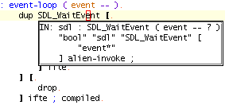
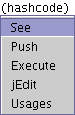
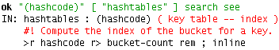
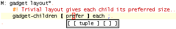
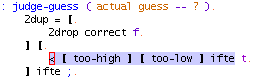
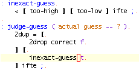

Factor is a programming language with postfix syntax. The Factor plugin for jEdit makes for a more pleasant programming experience -- it allows you to navigate Factor source very rapidly, running unit tests and reloading code with ease. Word definitions become a pleasure to write with on the fly parsing, completion, and stack effect checking. For information on Factor itself, including extensive documentation in PDF format, see the Factor web site: http://factor.sourceforge.net.
TheFactor.jar file shipped with the Factor distribution can then be placed in $HOME/.jedit/jars/ and loaded by jEdit.
The Factor plugin needs to communicate with a running instance of a Factor runtime for most features to work. To set up the external instance, go to Plugins>Plugin Options>Factor. You will need to supply a full path to the Factor runtime, as well as a path to the image file.
The embedded listener can be accessed by selecting the Factor shell in the Console plugin. The Run current file and Evaluate selection commands can be used to send text from jEdit to the listener.
Factor files are parsed in a background thread and checked for errors, using the framework provided by the SideKick plugin. Errors are underlined in the text area (and listed in the ErrorList plugin window). Words are looked up in the external Factor instance, and you are notified of typos immediately.

The stack effect of the word at the caret is shown in the status bar.

The Plugins>SideKick>Structure Browser displays a list of all words defined in the current buffer:

The Edit word command opens a dialog box where the name of a word can be typed -- while the word is being typed, the possible completions is instantly updated, and selecting one opens the source file containing the definition of that word:

To be able to edit definitions of standard library words, add a phrase like the following to your $HOME/.factor-rc:
"/home/slava/Factor/" "resource-path" set
The See word at caret command displays a popup word definition.
The Word usages at caret command displays a list of words that use a word.

Clicking on words in the listener shows a popup menu with various useful actions.
Here we see the result of selecting See.
The Edit word at caret command opens the source file containing the definition of the word at the caret.
The Infer word at caret command shows a popup with the inferred stack effect. Note that not all words have an inferred stack effect. This command is great for debugging!
Factor words are separated into vocabularies, and each source file must list which vocabularies it uses. A common error is a missing USING: declaration. The Use word at caret command searches for the word at the caret in all vocabularies, and adds a USE: declaration for the vocabulary to the start of the source file -- in this case, ifte is found in the kernel vocabulary, and the parse error instantly goes away:

Invoking Plugins>SideKick>Show Completion Popup displays a popup of possible completions for the word at the caret -- bind this to C+SPACE for quick access. Inserting a call to a word via a completion popup automatically adds a USING: declaration, if necessary.

The Extract word command can only be invoked if there is a selection. It asks for a new word name, replaces the selection with a call to the word, and adds a new colon definition directly above the current definition.
Here, some text is selected:
Now, Extract word is invoked, and a new word name is entered:
